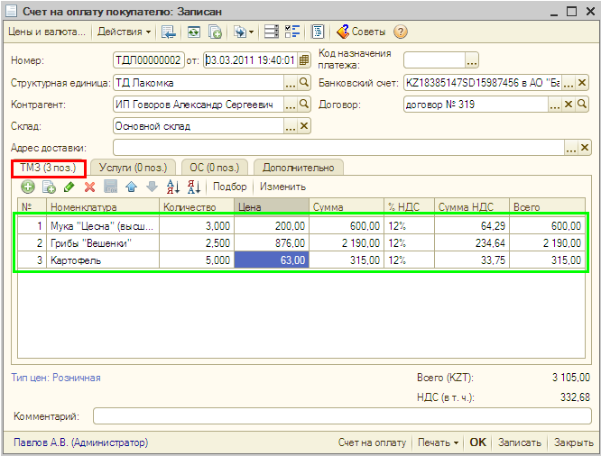
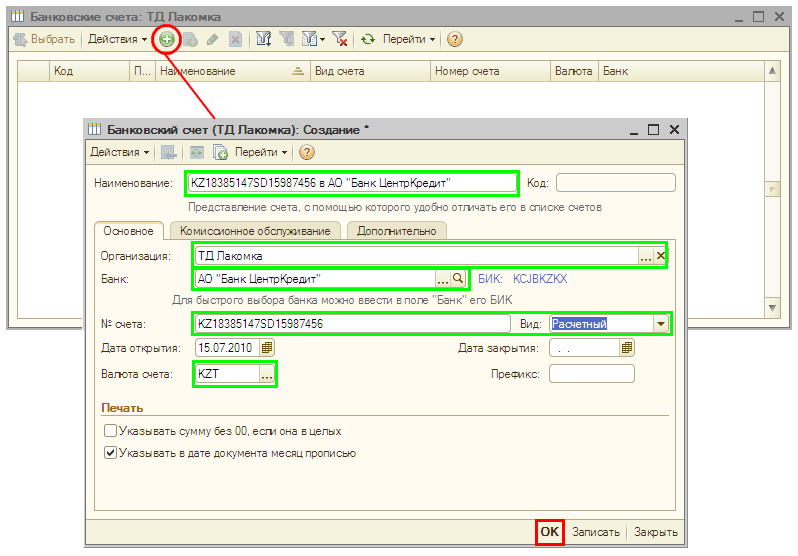
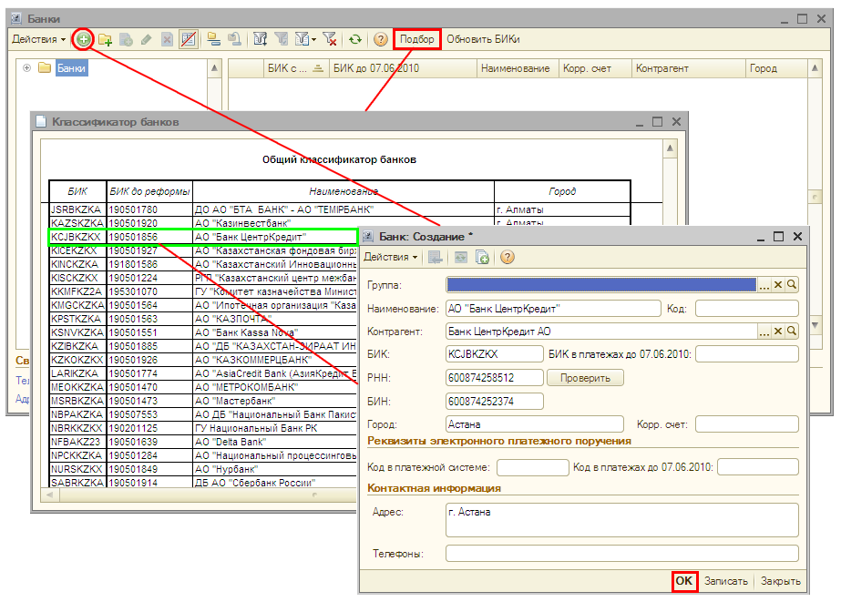
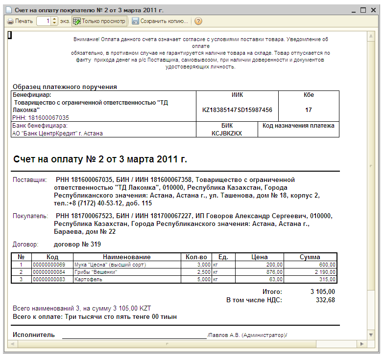

Выставление счета на оплату покупателю
Для выставления счета покупателю товаров и получения печатной формы счета (для предоставления покупателю) используется документ Счет на оплату покупателю.
- Откройте список документов Счет на оплату покупателю.
Для этого выберите меню Продажа, а в нем — подпункт Счет на оплату покупателю. Создайте новый документ Счет на оплату покупателю с помощью нажатия кнопки  (или нажмите клавишу Insert или выберите меню Действия — Добавить). Заполните реквизиты документа значениями так, как показано на рисунке:
(или нажмите клавишу Insert или выберите меню Действия — Добавить). Заполните реквизиты документа значениями так, как показано на рисунке:
 - Для заполнения реквизита Банковский счет (для организации ТД «Лакомка») добавьте новый расчетный счет в список банковских счетов организации. Для этого в поле Банковский счет документа нажмите на кнопку выбора
 , откроется список Банковские счета. Добавьте новый счет нажатием кнопки Добавить (или нажмите клавишу Insert или выберите меню Действия — Добавить). Заполните в форме Банковский счет значения реквизитов так, как показано на рисунке:
, откроется список Банковские счета. Добавьте новый счет нажатием кнопки Добавить (или нажмите клавишу Insert или выберите меню Действия — Добавить). Заполните в форме Банковский счет значения реквизитов так, как показано на рисунке:

Для заполнения реквизита Банк нажмите на кнопку выбора , откроется список банков. Добавьте новый банк АО «Банк ЦентрКредит», воспользовавшись кнопкой Подбор или заполните сведения о нем так, как показано на рисунке:
 - После заполнения всех реквизитов нажмите кнопку Записать в нижней части формы документа Счет на оплату покупателю.
- Для получения печатной формы счета нажмите на кнопку Счет на оплату или кнопку Печать в нижней части формы документа.

Только что Вы научились выставлять покупателю счет на оплату.
Из следующего раздела Вы узнаете, как оформить поступление денежных средств от покупателя на расчетный счет.